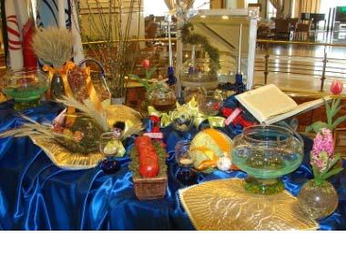

Dars-e 5 — Zibātarin fasl‐e sāl
Matn ♫ Zibātarin fasl‐e sāl
Bahār avvalin fasl‐e sāl‐ast. Farvardin, ordibehešt va xordād māhhā‐ye fasl‐e bahār hastand. Dar fasl‐e bahār havā mo’tadel‐ ast. Barg‐e deraxtān sabz mišavad va deraxtān šokufe midehand. Ruz‐e avval‐e farvardin šoru‐e sāl‐e irāni‐st. In ruz Nowruz nām dārad. Nowruz bozorgtarin jašn‐e Irāniyān‐ast. Sārā bahār rā az hame‐ye faslhā bištar dust dārad.
Dovvomin fasl‐e sāl tābestān‐ast. Tir, mordād va šahrivar māhhā‐ye fasl‐e tābestān hastand. Tābestān garmtarin fasl‐e sāl‐ast. Deraxtān dar tābestān mive midehand. Dar tābestān madresehā ta’til hastand. Sārā ma’mulan yek yā do hafte rā dar Rāmsar yā Nowšahr, kenār‐e daryā migozarānad.
Sevvomin fasl‐e sāl pāyiz‐ast. Mehr, ābān va āzar māhhā‐ye fasl‐e pāyiz hastand. Havā‐ye pāyiz xonak‐ast. Barg‐e deraxtān dar pāyiz zard mišavad. Pāyiz ham yek jašn‐e bāstāni dārad, ke nāme ān Mehregān‐ast. Fasl‐e Pāyiz barā‐ye Sārā behtarin fasl barā‐ ye kuhnavardi‐st.
Fasl‐e cāhārom‐e sāl zemestān‐ast. Dey, bahman va esfand māhhā‐ye fasl‐e zemestān hastand. Zemestān sardtarin fasl‐e sāl‐ ast. Šab‐e avval‐e zemestān derāztarin šab‐e sāl‐ast. In šab Šab‐e Celle yā Šab‐e Yaldā nām dārad. Mardom‐e Irān in šab rā jašn migirand. Sārā bā dustān‐aš zemestānhā be eski miravad.
Dorost yā qalat?
1. Ruz‐e avval‐e bahār āqāz‐e sāl‐e irāni‐st.
2. Tir, mordād va šahrivar māhhā‐ye fasl‐e pāyiz hastand.
3. Tābestān garmtarin fasl‐e sāl‐ast.
4. Sārā dar bahār eski mikonad.
5. Irāniyān šab‐e avval‐e zemestān rā jašn migirand.
Sāxtār
Sāxtār 18 Sefat‐e tafzili va āli
| Motlaq | šahr‐e bozorg | Širāz yek šahr‐e bozorg‐ast. | In šahr be bozorgi‐ye ān šahr‐ast. |
| Tafzili | šahr‐e bozorgtar Esfahān az Širāz bozorgtar‐ast. | Esfahān bozorgtar‐ast tā Širāz. | |
| Āli | bozorgtarin šahr | Tehrān bozorgtarin šahr‐e Irān‐ast. | Tehrān az hame‐ye šahrhā‐ye Irān bozorgtar‐ast. |
Nokte
- Sefat‐e tafzili pas az esm, vali sefat‐e āli piš az esm miāyad. - Barā‐ye moqāyese bā sefat‐e motlaq esm‐e bargerefte az sefat (bā pasvand‐e “‐i”) miāyad: bozorg > be bozorgi‐ye. - Barā‐ye moqāyese bā sefat‐e tafzili az piš az esm, vali tā pas az fe’l miāyad. - Sefat pas az harce tafzili‐st: Harce bištar, behtar.
Sāxtār 19 Adadhā
| **cand **term? | term‐e candom? | **candomin **term? | ||
| **haft **term | term‐e haftom | **haftomin **term | ||
| Adad be raqam | Adad‐e asli | Adad‐e tartibi (pas az esm) | Adad‐e tartibi (piš az esm) | |
| 1 | yek | yekom / avval / noxost | yekomin / avvalin / noxostin | |
| 2 | do | dovvom | dovvomin | |
| 3 | se | sevvom | sevvomin | |
| 4 | cāhār | cāhārom | cāhāromin |
| Adad be raqam | Adad‐e asli | Adad‐e tartibi (pas az esm) | Adad‐e tartibi (piš az esm) | |
| 5 | panj | panjom | panjomin | |
| 6 | šeš | šešom | šešomin | |
| 7 | haft | haftom | haftomin | |
| 8 | hašt | haštom | haštomin | |
| 9 | noh | nohom | nohomin | |
| 10 | dah | dahom | dahomin | |
| 11 | yāzdah | yāzdahom | yāzdahomin | |
| 12 | davāzdah | davāzdahom | davāzdahomin | |
| 13 | sizdah | sizdahom | sizdahomin | |
| 14 | cāhārdah | cāhārdahom | cāhārdahomin | |
| 15 | pānzdah | pānzdahom | pānzdahomin | |
| 16 | šānzdah | šānzdahom | šānzdahomin | |
| 17 | hefdah | hefdahom | hefdahomin | |
| 18 | hejdah | hejdahom | hejdahomin | |
| 19 | nuzdah | nuzdahom | nuzdahomin | |
| 20 | bist | bistom | bistomin | |
| 21 | bist‐o yek | bist‐o yekom | bist‐o yekomin | |
| … | bist‐o… | bist‐o… | bist‐o… | |
| 30 | si | siyom | siyomin | |
| 40 | cehel | cehelom | cehelomin | |
| 50 | panjāh | panjāhom | panjāhomin | |
| 60 | šast | šastom | šastomin | |
| 70 | haftād | haftādom | haftādomin | |
| 80 | haštād | haštādom | haštādomin | |
| 90 | navad | navadom | navadomin | |
| 100 | sad | sadom | sadomin | |
| 125 | sad‐o bist‐o panj | sad‐o bist‐o panjom | sad‐o bist‐o panjomin | |
| 200 | devist | devistom | devistomin | |
| 300 | sisad | sisadom | sisadomin | |
| 400 | cāhārsad | cāhārsadom | cāhārsadomin | |
| 500 | pānsad | pānsadom | pānsadomin | |
| 600 | šešsad | šešsadom | šešsadomin | |
| 700 | haftsad | haftsadom | haftsadomin | |
| 800 | haštsad | haštsadom | haštsadomin | |
| 900 | nohsad | nohsadom | nohsadomin | |
| 999 | nohsad‐o navad‐o noh | nohsad‐o navad‐o nohom | nohsad‐o navad‐o nohomin | |
| 1.000 | hezār | hezārom | hezāromin | |
| 2.000 | do hezār | do hezārom | do hezāromin |
| Adad be raqam | Adad‐e asli | Adad‐e tartibi (pas az esm) | Adad‐e tartibi (piš az esm) |
| 9.000 | noh hezār | noh hezārom | noh hezāromin |
| 1.000.000 | yek milyun | yek milyunom | yek milyunomin |
| 1.000.000.000 | yek milyārd | yek milyārdom | yek milyārdomin |
| Adad‐e kasri | 1/3 | yeksevvom | 5 ¼ | panj‐o yekcāhārom | ||
| Adad‐e a’šāri | 0.25 | bistopanjsadom | 1.25 | yek‐o bistopanjsadom | ||
| Cāhār amal‐e asli | ||||||
| + | 2 | + 3 = 5 | do be alāve/ezāfe‐ye se mišavad panj | |||
| ‐ | 5 | ‐ 3 = 2 | panj menhā‐ye se mišavad do | |||
| * | 2 | * 4 = 8 | do (zarb) dar cāhār mišavad hašt |
- 8 : 2 = 4hašt taqsim/baxš bar do mišavad cāhār
Nokte
- Ajzā‐ye adadhā‐ye kucaktar az hezār tanhā bā harf‐e rabt‐e “o” az yekdigar jodā mišavand: haftād‐o panj (75). - Dar adadhā‐ye bozorgtar az hezār, hezār, milyun, milyārd, … jodā nevešte mišavand: Se milyun‐o haštsad‐o panjāh hezār‐o pānsad‐o cehel (3,850,540). - Dar adadhā‐ye tartibi tanhā joz’‐e pāyāni pasvand migirad: panjāh‐o haštom (58om). - Baxš‐e kasri‐yo a’šāri peyvaste nevešte mišavad: sepanjom (3/5), bistosepanjom (23/5), bist‐o sepanjom (20 3/5), dohezārom (2/1,000), bistopanjhezārom (0.025), bist‐o dosadom (20.02), bistodosadom (0.22). - Be jā‐ye mišavad mitavānim beguyim mosāvi‐st bā yā barābar‐ast bā.
Sāxtār 20 Šomāreš
| Vāže‐ye šomāreši | Rade | Nemune | Be dun‐e vāže‐ye šomāreši | Be dun‐e esm |
| dast | lebās, zarf, mobl | yek dast kotšalvār | yek kotšalvār | yek‐i |
| dāne | mive, nān, toxmemorq | do dāne toxmemorq | do toxmemorq | do tā |
| farvand | havāpeymā | se farvand havāpeymā | se havāpeymā | se tā |
| jeld | ketāb | cāhār jeld ketāb | cāhār ketāb | cāhār tā |
| joft | cizhā‐ye dotāyi | panj joft kafš | panj kafš | panj tā |
| baste | ādāms, sigār, šokolāt, kebrit, tiq | šeš baste tiq | šeš tiq | šeš tā |
| tan / nafar | ādamhā | haft tan/nafar sarbāz | haft sarbāz | haft tā |
| ra’s | jānevarān | hašt ra’s gāv | hašt gāv | hašt tā |
| tā | hamegāni | noh tā toxmemorq | noh toxmemorq | noh tā |
Nokte
- Hengām‐e šomāreš esm mofrad mimānad: do tā toxmemorq (na do tā toxmemorqhā).
Sāxtār 21 Faslhā‐vo māhhā‐ye sāl
| | | | | | | | | |—–|———|———-|——|——– | —
| bahār | farvardin | ordibehešt | xordād | tābestān | tir | mordād | šahrivar |
| pāyiz | mehr | ābān | āzar | zemestān | dey | bahman | esfand |
Sāxtār 22 Māhhā‐ye milādi
žānviyefevriyemārsāvrilmežuanžuiyeutseptāmbroktobrnovāmbrdesāmbr
Nokte
- Taqvim‐e konuni‐ye Irān bā hejrat‐e payāmbar‐e Eslām dar sāl‐e 622 m. āqāz mišavad. - Extesār‐e taqvim‐e irāni h.š.‐st (hejri‐ye šamsi). - Extesār‐e māhhā‐ye irāni: far., ord., xor., tir., mor., šah., meh., ābā., āza., dey., bah., esf. - Extesār‐e māhhā‐ye milād: žān., fev., mār., āvr., me, žua., žui., ut, sep., okt., nov., des. - Barā‐ye tabdil‐e sāl‐e milādi be hejri‐ye šamsi bāyad 622 (az avval‐e žānviye tā bistom‐e mārs 621) sāl kam konim.
Sāxtār 23 Bayān‐e tārix
| šanbe, 31om‐e farvardin‐e 1383 | 31om‐e far. ‐e 1383 | 31‐01‐83 | farvardin‐e 83 |
| šanbe, 31‐e farvardin‐e 1383 | 31‐e far. ‐e 1383 | 31‐01‐1383 h.š. | far. ‐e 83 |
Irān‐o irāni Nowruz
Goftogu Cand sāl‐etun‐e?
Sāxtār
Jāhā‐ye xāli rā bā vāžehā‐ye zir por kon!
bozorgtarsālemtarinderāzisaxtgirtarkohnetarjavāntarintamizipirtarbāhuštarin
- In xatkeš be __‐ye ān xatkeš‐ast. 2. Kāmbiz __ dānešāmuz‐e kelās‐ast. 3. Šalvār‐e man be __‐ye pirāhan‐am‐ast. 4. Navid az Omid __‐ast. 5. Āmuzgār‐e mā az hame‐ye āmuzgārān __‐ast. 6. __ dānešju Faribā‐st. 7. Ān mard __ az pedar‐e man‐ast. 8. In qazā az __ qazāhā‐st. 9. In lebāshā __ az ān lebāshā hastand.
Kodām gozine dorost‐ast?
| | | | | | | —
| 1. | Man dar radif‐e … minešinam. | |||
| a) sevvomin | b) cāhārom | c) sesadom | d) do tā | |
| 2. | Emruz … sālruz‐e āšnāyi mā‐st. | |||
| a) haft tā | b) haftom | c) haft | d) haftomin | |
| 3. | Ānhā dar mazrae‐šān se … gusfand dārand. | |||
| a) baste | b) dāne | c) farvand | d) ra’s | |
| 4. | Kāmbiz cāhār … jurāb mixarad. | |||
| a) jeld | b) dast | c) joft | d) baste | |
| 5. | …‐e in zamin rā miforušim. | |||
| a) se | b) sevvom | c) dosevvom | d) sevvomin |
Irān‐o irāni – Nowruz
Eyd‐e Nowruz bozorgtarin jašn‐e melli‐ye irāniyān‐ast. Nowruz āqāz‐e sāl‐e now‐e irāni, barābar bā avval‐e farvardin va šoru‐e fasl‐e bahār‐ast. Mardom‐e Irān az cand ruz qabl be pišvāz‐e Nowruz miravand. Ānhā xānetekāni mikonand va lebāshā‐vo vasāyel‐e now mixarand.
Šab‐e cāhāršanbe‐ye āxar‐e sāl, ya’ni āxarin sešanbešab‐e sāl, Cāhāršanbesuri nām dārad. Dar in šab irāniyān ātašbāzi mikonand va az ru‐ye ātaš miparand‐o āhang‐e viže‐i mixānand: Zardi‐ ye man az to, sorxi‐ye to az man!
Hengām‐e šoru‐e sāl hame bā lebāshā‐ye now dowr‐e Sofre‐ye Haftsin minešinand. Dar Sofre‐ye Haftsin dar kenār‐e cizhā‐ye digar haft ciz‐ast, ke bā “s” āqāz mišavad: sib, serke, samanu, somāq, sir, sabze, sekke va senjed.
Pas az sāltahvil hame bā ham rubusi mikonand, be ham tabrik miguyand va be yekdigar, beviže baccehā, eydi midehand. Dar ruzhā‐ye pas az sāltahvil xānevādehā be didobāzdid‐e yekdigar va gāh‐i ham be mosāferat miravand.
Ruz‐e sizdahom‐e farvardin ruz‐e āxar‐e ta’tilāt‐ast. Dar in ruz mardom be gardeš‐e dastejam’i miravand va tamām‐e ruz rā be tafrih migozarānand. In ruz Sizdahbedar nām dārad.
Pāsox bedeh!
- Irāniyān dar ruzhā‐ye qabl az sāl‐e now cekār mikonand? 2. Dar Šab‐e Cāhāršanbesuri cekār mikonand? 3. Dar Sofre‐ye Haftsin ce hast? 4. Irāniyān dar ruzhā‐ye pas az sāltahvil cekār mikonand? 5. Dar Ruz‐e Sizdahbedar cekār mikonand?
Goftogu – Cand sāl‐etun‐e?
Faribā: Kāmrān, to cand sāl‐et‐e? Kāmrān: Man bist sāl‐am‐e.
Faribā:To candomin bacce‐ye xunevāde‐i?
Kāmrān: Man dovvomin bacca‐m. Barādar‐am az man bozorgtar‐e. Xāharā‐m az man kuciktar‐an. Faribā: Mage cand tā xāhar dāri?
Kāmrān:Do tā xāhar dāram.
Faribā: Kuciktarin xāhar‐et cand sāl‐eš‐e? Kāmrān: Šunzdah sāl‐eš‐e.
Nokte
| Goftāri | Neveštāri |
| cand sāl‐et‐e | cand sāl‐at ast |
| xunevāde | xānevāde |
| bacca‐m | bacce‐am |
| xāharā‐m | xāharhā‐yam |
| kucik | kucak |
| cand sāl‐eš‐e | cand sāl‐aš‐ast |
Ebārathā/vāžehā
Nuzdah sāl‐am‐e – sevvomin bacce – barādarā‐m az man bozorgtar‐an – cāhārdah sāl‐eš‐e
Bā estefāde az ebārathā/vāžehā goftogu‐ye bālā rā bā hamkelāsi‐yat tamrin kon! Jāhā‐ye xāli rā por kon!
Xānom‐e Nāmju: Bebxašin Āqā‐ye Āzād, šomā __ sāl dārin?
Āqā‐ye Āzād: Man cehelopanj sāl __. Xānom‐e Nāmju: Šomā __ farzand‐e xunevāde‐in?
Āqā‐ye Āzād: Man __ farzand‐am. Do tā barādar‐e bozorgtar dāram. Xānom‐e Nāmju: Bozorgtarin barāder‐etun __ sāl‐ešun‐e?
Āqā‐ye Āzād:Cehelonoh sāl __‐e.
Az goftāri be neveštāri tabdil kon!
GoftāriNeveštāri
Cand sāl dārin?
Man sevvomin farzand‐e xunevāda‐m.
Mādar‐etun cand sāl‐ešun‐e?
Barādarā‐m az man kuciktar‐an.
Ce omr‐e derāz‐i dāre!
Vāžehā-ye dars-e
Pasoxhā-ye dars-e
Dorost yā qalat?
1. dorost – 2. qalat – 3. dorost – 4. qalat – 5. dorost
Jāhā‐ye xāli rā bā vāžehā‐ye zir por kon!
1. derāzi – 2. bāhuštarin – 3. tamizi – 4. bozorgtar – 5. saxtgirtar – 6. javāntarin – 7. pirtar – 8. sālemtarin – 9. kohnetar
Kodām gozine dorost‐ast?
1. b) – 2. d) – 3. d) – 4. c) – 5. c)
Jāhā‐ye xāli rā por kon!
cand – dāram – candomin – sevvomin – cand – ‐eš
Az goftāri be neveštāri tabdil kon!
Cand sāl dārid? – Man sevvomin farzand‐e xānevāde‐am. – Mādar‐etān cand sāl‐ešān‐ast? – Barādarhā‐yam az man kucaktar‐ and. – Ce omr‐e derāz‐i dārad!
ādam человек ādāms жевательная резинка āhang песня; музыка; мелодия āqāz начало (آ___) āšnāyi представление, знакомство ātašbāzi фейерверк avval первый, начало avvalin первый āxar конец; последний bahār весна barābar равный, одинаковый barg лист (на дереве) bāstāni древний baxš bar разделенный на be alāve-ye в дополнение к; плюс be ezāfe-ye в дополнение к; плюс be pišvāz raftan (rav, row) добро пожаловать beviže в частности; особенно bištar более candom какой по счёту? candomin какой по счёту? cekār что (делать)? dāne зерно dastejam’i общий, совместный derāz длинный derāzi длина didobāzdid посещение и ответный визит digar другой, (по)следующий dorost правильный, правильно dotāyi двойной dowr-e вокруг eyd праздник (ع___) eydi новогодний подарок farvand счетное слово для самолётов farzand ребенок (сын или дочь) fasl сезон foruxtan (foruš) продавать gāh-i иногда gardeš 1) прогулка 2) поворот gāv корова, бык gozarāndan (gozarān) тратить gusfand овца hafte неделя hame все, всё hamegāni общий; общественный havāpeymā самолет hengām(-e) время; в то время как jānevar животное; живое существо jašn праздник (ج___) javān молодой, юноша jeld футляр, чехол joft пара jurāb носки, чулки kafš обувь kebrit спичка kodām который kohne старый (предмет) kotšalvār костюм kuhnavardi горные виды спорта; альпинизм madrese школа magar разве māh месяц mazrae с\х поле menhā-ye минус mive фрукты mobl мебель, предмет мебели nafar человек (ن___) nāme письмо nān хлеб nešastan (nešin) сидеть, садиться now новый noxost первый; во-первых noxostin первый omr жизнь paridan (par) прыгать; летать pas тогда, итак pāyiz осень pir старый (человек) pirāhan рубашка, платье qabl последний; предыдущая; бывший; назад ra’s 1) счетное слово для животных 2) вершина, остриё radif ряд ru лицо rubusi kardan (kon) обнимать-целовать sabze зелень sālem здоровый sālruz юбилей sāltahvil момент смены года šalvār штаны sarbāz солдат sard холодный sekke монета senjed бот. лоховое дерево, облепиха serke уксус sešanbešab вторник ночью sib яблоко sigār сигарета sir чеснок sofre скатерть šokolāt шоколад šokufe dādan (deh) цвести somāq бот. сумах (кустарник) šoru’ начало sorxi покраснение ta’tilāt каникулы, отпуск tabrik goftan (gu) поздравлять tamām конец tamizi чистота tan тело taqsim bar разделенный на term семестр tiq лезвие toxmemorq яйцо vasāyel вещи, принадлежности viže особенный, спциальный xānetekāni уборка дома xatkeš правитель yā или ya’ni а именно; “т.е.” yekdigar друг друга zamin земля zarb dar умноженное на zard желтый zarf контейнер; оболочка zemestān зима